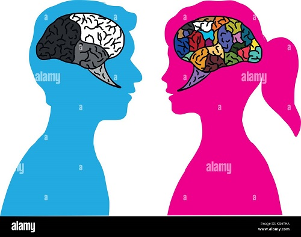
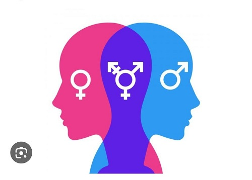

24 De Octubre Del 2023
TERCER PERÍODO
RULE #1: TREAT OTHERS THE WAY YOU WISH TO BE TREATED
The good old Golden Rule says it all: empathy, tolerance and peace. This principle teaches, you to love yourself
and love others. It spans cultures and faiths and is a universal age. old concept which can't faill
TRADUCCIÓN:
REGLA #1: TRATAR A LOS DEMÁS COMO MANERA EN QUE DESEA SER TRATADO.
La vieja regla de oro lo dice todo: empatía, tolerancia y paz. Este principio te enseña a amarte a ti mismo y
a amar a los demás. Abarca culturas y religiones y es una era universal. viejo concepto que no puede fallar.

RULE #2: LISTEN TO HEAR WHAT OTHERS HAVE TO SAY, NOT TO SPEAK
Engage in dialogue with an open mind and the real will to listen to others. Only then will you be able to understand each other and build bridges. Change cannot happen and
peace cannot be established if people are unable to communicate with others; to listen to their experiences and views
and show empathy, understanding and compassion.
TRADUCCIÓN:
REGLA #2: ESCUCHE PARA OÍR LO QUE OTROS TIENEN QUE DECIR, NO PARA HABLAR.
Entable un diálogo con la mente abierta y la verdadera voluntad de escuchar a los demás. Sólo así podréis entenderos y tender puentes. Cambiar. Esto no puede suceder y la paz no puede establecerse si las personas no pueden comunicarse con los demás; escuche sus experiencias y puntos de vista y muestre empatía, comprensión y compasión.

RULE #3: ACCEPT DIFFERENCE OF OPINIÓN
We all have different opinions and we may not all agree on the same things. Building compromise and mutual understanding
is Incredibly important. Sometimes we simply need to agree to disagree and recognise that there are different beliefs and
forms of expression other than our own.
TRADUCCIÓN:
REGLA #3: ACEPTAR LA DIFERENCIA DE OPINIÓN
Todos tenemos opiniones diferentes y puede que no todos estemos de acuerdo en las mismas cosas. Lograr compromisos y
comprensión mutua es increíblemente importante. A veces simplemente necesitamos estar de acuerdo en no estar de acuerdo
y reconocer que existen creencias y formas de expresión diferentes a las nuestras.

RULE #4: DO NOT FIGHT VIOLENCE WITH VIOLENCE
Violence is never the answer. Peace can only be brought through free will, dialogue, empathy and forgiveness. Do not stoop to same level as someone who is violent and therefore continue the vicious cycle. This does not change anything.
TRADUCCIÓN:
REGLA #4: NO COMBATIR LA VIOLENCIA CON VIOLENCIA.
La violencia nunca es la respuesta. La paz sólo puede lograrse mediante el libre albedrío, el diálogo, la empatía y el perdón. No te rebajes al mismo nivel que alguien que es violento y, por lo tanto, continúas el círculo vicioso. Esto no cambia nada.

RULE #5: ACCEPT THAT IDENTITY IS FLUID
Any one person can have multiple aspects to their identity. Identity comprises many elements such as nationality,
cultural-linguistic origin, age and religious beliefs. Identity can and does change, taking on many new forms and means
of personal expression as we learn new languages, move home, adopt new beliefs, marry into a different tradition and
experience life! Do not put people into a box. Avoid categorising people according to an us vs. them narrative and
remember: we are all singular individuals with unique experiences. Such approaches and narratives are highly divisive
and unproductive.
TRADUCCIÓN:
REGLA #5: ACEPTAR QUE LA IDENTIDAD ES FLUIDA.
Cualquier persona puede tener múltiples aspectos de su identidad. La identidad comprende muchos elementos como la
nacionalidad, el origen cultural-lingüístico, la edad y las creencias religiosas. La identidad puede cambiar y de hecho
cambia, adoptando muchas formas y medios nuevos de expresión personal a medida que aprendemos nuevos idiomas,
nos mudamos a casa, adoptamos nuevas creencias, nos casamos con una tradición diferente y experimentamos la vida.
No pongas a la gente en una caja. Evite categorizar a las personas según una narrativa de nosotros versus ellos y
recuerde: todos somos individuos singulares con experiencias únicas. Estos enfoques y narrativas son muy divisivos e
improductivos.

RULE #6: AVOID STEREOTYPES
Take people for the individuals they are. Avoid ny misconceptions, stereotypes and toxic narratives and get to know a
person instead.
Do This will avoid offence, misunderstandings and ultimately help you to create ces. a real bond with others based and
on true understanding, empathy and trust. After all, no one likes to be judged - especially from the outsid.
TRADUCCIÓN:
REGLA #6: EVITE LOS ESTEREOTIPOS
Tome a las personas por los individuos que son. Evite conceptos erróneos, estereotipos y narrativas tóxicas y, en su
lugar, conozca a una persona. Hacer esto evitará ofensas, malentendidos y, en última instancia, le ayudará a crear ces.
un vínculo real con los demás basado en una verdadera comprensión, empatía y confianza. Después de todo, a nadie le gusta
que lo juzguen, especialmente desde el exterior.

RULE #7: APPROACH THE MEDIA WITH SKEPTICISM
Don't just believe everything you see on the TV, in the newspapers or on the internet. Think objectively for yourself.
Get to know the people and facts behind any story and don't fall for media scapegoating. Stand united.
TRADUCCIÓN:
REGLA #7: ACÉRQUESE A LOS MEDIOS CON ESCEPTICISMO
No creas simplemente todo lo que ves en la televisión, en los periódicos o en Internet. Piensa objetivamente por ti
mismo. Conozca a las personas y los hechos detrás de cualquier historia y no se deje engañar por los medios como chivos
expiatorios. Manténganse unidos.

RULE #8: BE USE CAREFUL OF THE LANGUAGE YOU
Thing you see Your choice of language, alongside tone of voice papers or on and intonation all convey a message. Make
sure ectively for that that message is positive. Be mindful of the he people and language you use, avoiding anything with
and don't fall misogynistic, racist, Islamophobic, homophobic or anti-Semitic overtones. Do not underestimate the power
of language - for better or for worse! And remember, it's not always what you say, it's how you say it.
TRADDUCCIÓN:
REGLA #8: CUIDADO CON EL IDIOMA Y USO
Su elección de idioma, junto con el tono y la entonación, transmiten un mensaje. Haz que ese mensaje sea positivo. Tenga
en cuenta el lenguaje que utiliza y evite todo lo que tenga connotaciones misóginas, racistas, islamófobas, homofóbicas o
antisemitas. No subestimes el poder del lenguaje, ¡para bien o para mal! Y recuerda, no siempre es lo que dices, así es
como lo dices.
FRASES EN PASADO SIMPLE Y PRESENTE PERFECTO
Regla #1
Pasado Simple: I treated my friends the way I liked to be treated.
Traducción: Yo trate a mis amigos como me gustaba que me trataran a mi.
Presente perfecto: I treat my friends how I like to be treated.
Traducción: Yo trato a mis amigos como me gusta ser tratado.
Regla # 2
Pasado Simple: I listened to my family before speaking.
Traducción: Escuché a mi familia antes de hablar.
Presente Perfecto: I listen to my family before speaking.
Traducción: Escucho a mi familia antes de hablar.
Regla # 3
Pasado Simple: I accept the difference of opinion of my colleagues.
Traducción: Yo acepte la diferencia de opinión a mis compañeras.
Presente Perfecto: I accept the difference of opinion of my colleagues.
Traducción: Yo acepto la diferencia de opinión a mis compañeras.
Regla # 4
Pasado Simple: I did not fight violence when my friend was angry.
Traducción: Yo no combatí a la violencia cuando mi amiga estaba enojada.
Presente Perfecto: I don't fight violence when my friend was angry.
Traducción: Yo no combato a la violencia cuando mi amiga estaba enojada.
Regla # 5
Pasado: I accept the person of multiple aspects.
Traducción: Yo acepte a la persona de múltiples aspectos.
Presente perfecto: I accept the person from multiple aspects.
Traducción: Yo acepto a la persona de múltiples aspectos.
Regla # 6
Pasado: I avoid stereotypes with my colleagues.
Traducción: Yo evite los estereotipos con mis compañeros.
Presente perfecto: I avoid stereotypes with my colleagues.
Traducción: Yo evito los estereotipos con mis compañeros.
Regla # 7
Pasado: I thought of myself, not the media.
Traducción: Yo pensaba en mí mismo no en los medios de comunicación.
Presente perfecto: I think of myself, not the media.
Traducción: Yo pienso en mi mismo no en los medios de comunicacion.
Regla # 8
Pasado: I had a very controlled vocabulary.
Traducción: Yo tenía un vocabulario muy controlado.
Presente perfecto: I have a very controlled vocabulary.
Traducción: Yo tengo un vocabulario muy controlado.
AUDIOS LECTURAS.